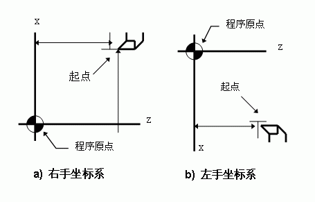
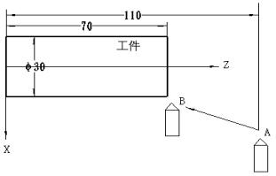
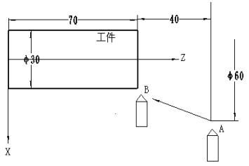

| 坐标系统 |
| 程序原点 在程序开发开始之前必须决定坐标系和程序的原点。 通常把程序原点确定为便于程序开发和加工的点。  在多数情况下，把 Z 轴与 X 轴的交点设置为程序原点 机械原点安装在车床上的固定位置，通常机械原点安装在X轴和Z轴的正方向的最大行程处。若你的车床上没有安装机械原点，请不要使用本系统提供的有关机械原点的功能 （如G28）。 编程坐标 本系统可用绝对坐标（X，Z字段），相对坐标（U，W字段），或混合坐标（X/Z，U/W字段，绝对和相对坐标同时使用）进行编程。相对坐标是相对于当前的坐标，对于X轴，还可使用直径编程或半径编程。 （1）绝对坐标值 “距坐标系原点的距离”即刀具要移到的坐标位置。  刀具从A点移动到B点，使用B点的坐标值，其指令如下： X30.0 Z70.0； （2）增量坐标值 指令从前一个位置到下一个位置的距离。  刀具从A点移动到B点，其指令如下： U-30.0 W-40.0； 坐标的单位及范围 本系统的最小单位为0.001mm，编程的最大移动范围是±9999.999 X轴：最小设定单位0.001mm 最小移动单位0.0005mm(直径编程) 最小设定单位0.001mm 最小移动单位0.001mm（半径编程） Z轴：最小设定单位0.001mm 最小移动单位0.001mm 。 初态，模态 初态是指运行加工程序之前的系统编程状态。模态是指相应字段的值一经设置，以后一直有效，直至某程序段又对该字段重新设置。模态的另一意义是设置之后，以后的程序段中若使用相同的功能，可以不必再输入该字段。 加工程序的开头 开始执行加工程序时，系统（刀尖的位置）应处于加工程序的起点位置（即加工原点，或机械零点）。刀具为程序要使用的第一把刀，并且刀偏为0（即无刀偏状态）。一般情况下，程序的第一把刀的刀具偏值应烛（0，0）即无刀偏。 加工程序的结束 程序的最后一段以M30来结束加工程序的运行。执行这结束程序功能之前必须使系统回到加工原点，取消刀具偏置。
|